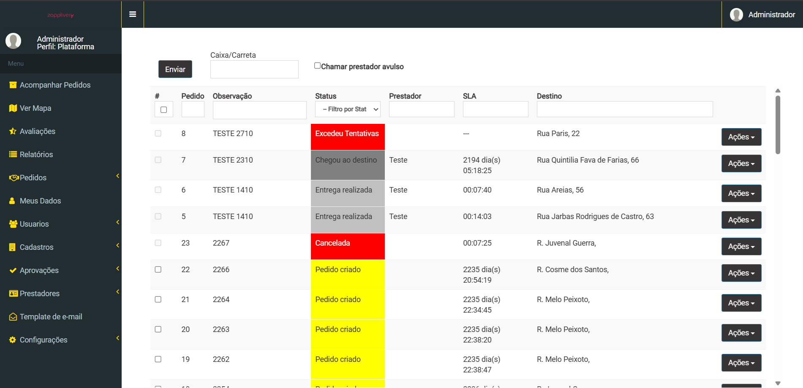

Onde está?
Onde está o motorista, técnico, fornecedor, cliente ou transportador?
Rastreabilidade de operações externas
Para entregas, equipes de campo e chegadas à sua unidade, acompanhe localização, previsão, eventos, tempos e evidências em uma única jornada.
Onde a operação perde
Quando a atividade acontece na rua, no cliente ou no caminho até sua unidade, os sistemas internos deixam de responder perguntas básicas.
Onde está o motorista, técnico, fornecedor, cliente ou transportador?
Qual é a previsão real e a operação está dentro da janela?
Houve atraso, espera, interrupção, desvio ou alguma ocorrência?
Existe um histórico confiável comprovando a conclusão?
O que muda na operação
Quando status e ocorrências ficam registrados ao longo da jornada, a equipe consegue priorizar o que precisa de ação e consultar o histórico sem depender de atualizações dispersas.
Compare previsão e andamento para identificar operações que podem sair da janela combinada.
Consulte eventos e status em uma visão compartilhada, liberando tempo da equipe para coordenar exceções.
Reúna horários, ocorrências e evidências para entender como cada atividade foi concluída.

O sistema na prática
Acompanhe pedidos, responsáveis, localização, previsão de chegada e ocorrências. O histórico ajuda a entender o que pede atenção e a decidir como agir.
Solicitar apresentação →Gestão por exceção
Eventos relevantes ajudam a identificar atrasos, mudanças de ETA, espera excessiva ou interrupções, para que a equipe priorize onde uma intervenção pode ser necessária.
Os exemplos são ilustrativos e não representam dados de uma operação real.
Uma plataforma. Três jornadas.
Acompanhe pedidos, cargas e transportadores da saída à entrega.
Pedido → rota → entregaTenha visibilidade de técnicos e atividades em campo.
Agenda → deslocamento → serviçoOrganize chegadas de clientes, fornecedores e transportadores.
Convite → ETA → chegadaConverse com nosso time